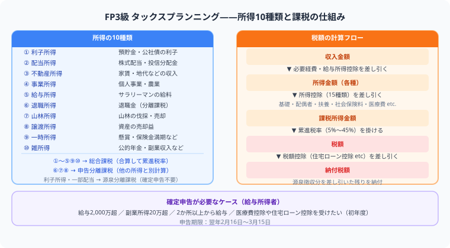

FP3級 タックスプランニングとは？
10種類の所得と所得控除・税額控除の違いを完全解説
タックスプランニングは、所得税を中心に学ぶ分野です。10種類の所得、所得控除、税額控除、確定申告の流れを押さえると、計算問題にも対応しやすくなります。
- 所得税は「収入→所得→課税所得→税額→納付税額」の5ステップで計算する
- 所得控除は課税所得を減らし、税額控除は税額を直接減らす
- 損益通算できるのは不動産・事業・山林・譲渡（土地建物除く）の「ふじさん」
- 医療費控除は実質負担額－10万円（上限200万円）
よく出る項目

タックスは「収入−必要経費=所得」「所得−所得控除=課税所得」「課税所得×税率−税額控除=納付税額」の5ステップを頭に入れることが最優先です。所得控除と税額控除の違いも頻出の引っかけです。
| 項目 | ポイント |
|---|---|
| 所得の種類 | 給与所得、事業所得、不動産所得、譲渡所得など |
| 所得控除 | 基礎控除、配偶者控除、扶養控除、社会保険料控除 |
| 税額控除 | 住宅ローン控除、配当控除など |
| 確定申告 | 申告が必要な人、期限、医療費控除 |
勉強のコツ
- 所得控除と税額控除を混同しない
- 給与所得控除、退職所得、譲渡所得は計算パターンを練習する
- 医療費控除や住宅ローン控除は生活に近いので具体例で覚える
- 確定申告は「誰が必要か」を押さえる
まとめ
- タックスは所得税の計算構造が中心
- 所得控除は課税所得を減らし、税額控除は税額を直接減らす
- 10種類の所得は代表例とセットで覚える
所得税の計算構造（5ステップ）
FP3級では所得税の計算の流れを理解しておくことが重要です。次の5ステップで整理しましょう。
- ステップ1：各所得の金額を計算（収入−必要経費）
- ステップ2：所得を合算して総所得金額を求める
- ステップ3：総所得金額−所得控除＝課税所得金額
- ステップ4：課税所得金額×税率（累進課税）＝税額
- ステップ5：税額−税額控除＝納付税額
確定申告が必要な人・不要な人
| 申告が必要な人 | 申告が不要な人（目安） |
|---|---|
| 給与収入2,000万円超 | 給与1か所からのみで年末調整済み |
| 給与2か所以上で副業所得20万円超 | 公的年金400万円以下で他の所得20万円以下 |
| 医療費控除・住宅ローン控除を受ける | 上記以外で源泉徴収のみで完結する場合 |
よくある質問
FP3級のタックスで一番出やすいのはどこですか？
「所得の種類と計算方法」「所得控除と税額控除の違い」「確定申告が必要な人の条件」が最頻出です。特に給与所得控除・退職所得の計算、医療費控除の計算式（医療費−10万円または総所得金額の5%）は計算問題として出ます。
10種類の所得を全部覚える必要がありますか？
全部完璧に覚える必要はありません。FP3級で特に頻出なのは①給与所得②事業所得③不動産所得④一時所得⑤退職所得⑥譲渡所得の6つです。各所得の「収入−経費の扱い」と「損益通算できるかどうか」を中心に整理しましょう。
損益通算とは何ですか？どの所得でできますか？
損益通算とは、ある所得の損失を他の所得と合算して税額を減らすことです。損益通算できる所得は「不動産所得・事業所得・山林所得・譲渡所得（土地建物除く）」の4種類（頭文字で「ふじさん」と覚えます）。給与所得や一時所得の損失は損益通算できません。
医療費控除の計算式を教えてください。
医療費控除額＝（実際に支払った医療費−保険金等で補填された金額）−10万円（または総所得金額等の5%のいずれか少ない方）です。最高200万円まで控除できます。確定申告が必要で、年末調整では適用できない点も押さえましょう。
📋 まとめ：タックスプランニング 早見表
お金の知識は、知っているだけで人生の選択肢が増えます。
この記事が少しでも参考になったら、この下にある【いいねボタン】をポチッと押してもらえると、めちゃくちゃ嬉しいです！ そして、Study Questで今日の学習時間を記録して、合格までの成長を「見える化」していきましょう。